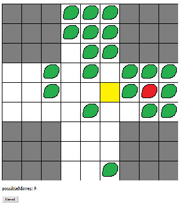

Small Random Projects
5/29/2020
Peg Soltaire

This game requires you to get rid of all the pegs. Click a peg and jump over
another peg horizontally or vertically. The jumped over peg gets removed. Dragging
is not supported. Clicking only.
(Github)
(Link)
Monte Carlo Pi Simulation

This estimates the value of pi by generating a lot of random points and then using some basic
math and statistics.
(Github)
(Link)
Monte Carlo Coin Toss Simulation

This is a Monte Carlo gambling simulation. It demonstrates how much money you will
have after you flip a coin a ton of times with a slightly negative payout.
(Github)
(Link)